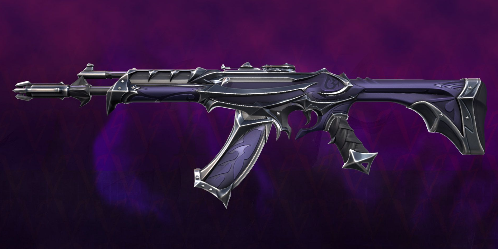
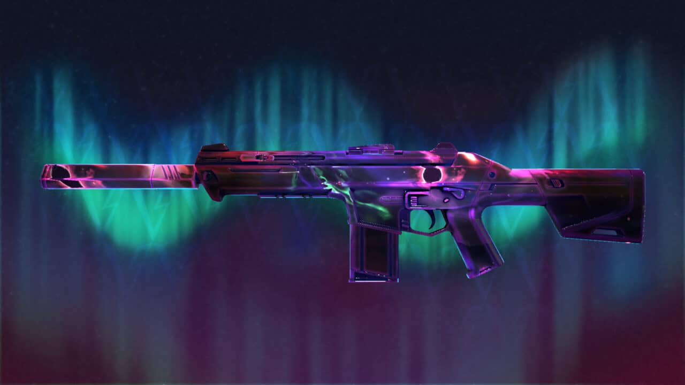
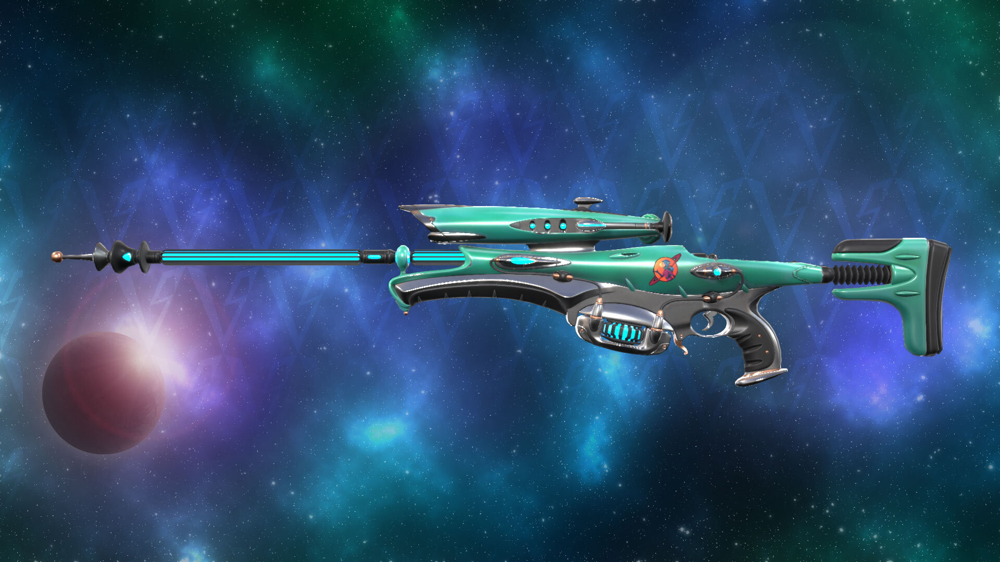

Guns
|  |
Vandal La arma que es más similar a un Ak47 es de disparo más lento, tiene mayor retroceso, pero lo compensa con un mayor poder de frenado. |
|  |
Phantom Es un rifle automático suprimido que mantiene las cosas simples, pero muy efectivas. Hacer clic con el botón izquierdo proporcionará disparos precisos y potentes que no son demasiado difíciles de controlar y pueden derribar enemigos rápidamente. |
|  |
Operator Es un francotirador con el cual puedes derribar con solo una bala a alguien en el cuerpo y la cabeza a cualquier distancia, lo que lo convierte en el arma más poderosa del juego. |